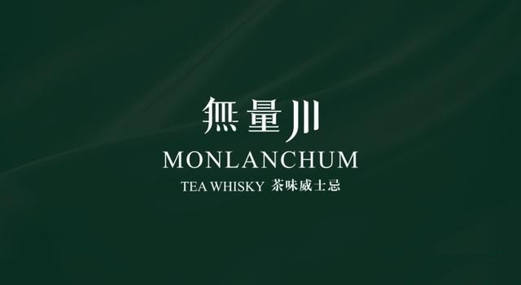
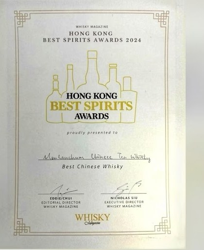
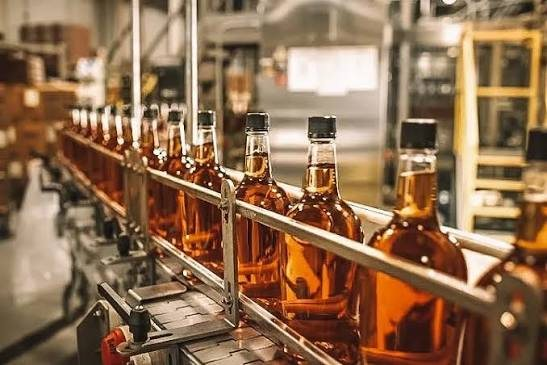

獨家裝瓶
獨家發行
精挑細選的稀有烈酒，以 White Rose Cooperage 品牌限量推出。

首發系列 · 即將推出
無量川（Monlanchum）
出自 2024 年最佳中國威士忌得主
「無量川」得名於雲南無量山——當地以古樹普洱及歷史悠久的茶園聞名遐邇，酒名正是向這份非凡傳承致敬。
我們非常榮幸與「無量川」合作，推出 White Rose Cooperage Select（白玫瑰甄選） 系列首款作品。此版本嚴格限量 2024 瓶，以紀念無量川的獲獎年份，現正生產中，酒瓶及酒標由白玫瑰親自設計。
酒液以珍稀 20 年陳期普洱茶桶潤桶熟成，憑藉開創性的木桶調味技術，呈現出令人驚嘆的深度與細膩、帶大地氣息的複雜層次。
- 狀態
- 生產中
- 系列
- 白玫瑰甄選 White Rose Cooperage Select
- 版本
- 限量 2024 瓶
- 過桶
- 20 年陳期普洱茶桶

獎項殊榮
2024 年最佳中國威士忌
無量川茶味威士忌榮獲 Whisky Magazine 香港最佳烈酒大獎 2024「最佳中國威士忌」。
無量川於 2024 年 11 月在 Whisky Live 及 Bar Show Hong Kong 獲頒該組別金獎；同年其他得獎酒款包括山崎 12 年及 Bowmore 18 年。
我們的理念
挑選標準與合作方式

嚴格挑選
我們在世界各地尋找具獨特潛力的酒液。只有在木桶交互作用、風味複雜度與熟成深度上符合我們標準的酒款，才會獲得 White Rose Cooperage 的品牌標籤。
裝瓶合作
我們與蒸餾廠、獨立調配師、品牌方及私人藏家合作，協助木桶挑選、客製化潤桶及包裝合規事宜。
商討合作